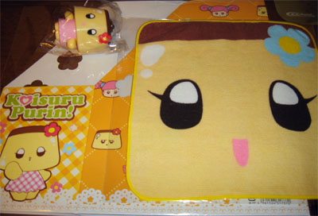
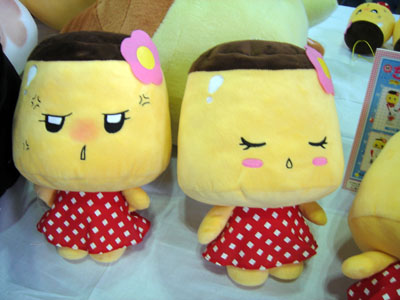
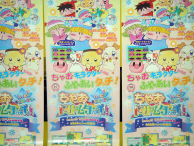
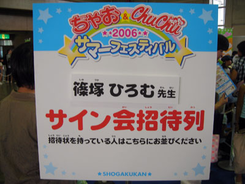
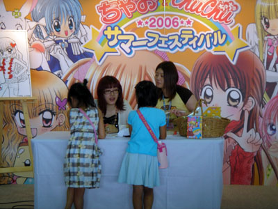
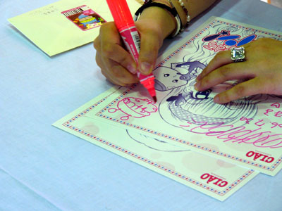
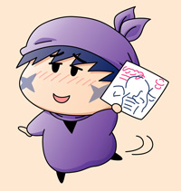

2006年7月30日（日） 14:00～
毎年恒例のちゃおサマフェス。今年も篠塚ひろむ先生のサイン会が名古屋会場（名古屋市中小企業振興会館 吹上ホール）で行われるということで、アコモさん、みつりんさんと一緒に名古屋会場へ向かいました。サイン会参加の私はとにかくドキドキしっぱなし。以下にそのサマフェスのレポートを書きますね。
前日に用事があったため、私は夜遅く（２２時過ぎ）の新幹線で名古屋へまず移動。名古屋駅からは地下鉄で栄へ行き、みつりんさんと待ち合わせて、ネットカフェで一晩過ごしました。翌朝早くに会場へ行き、篠塚先生サイン会の整理券を何とかゲット！（これに失敗すると名古屋へ来た意味がなくなるという一大事が…^^;） 私たちの前にもさらなる強者がすでに何人か並んでいて、私の整理券番号はNo.11でした。
サイン会は14時からなので、それまで金山駅前のデニーズで時間つぶし。いろいろおしゃべりをして、その後は私の希望でもある名古屋名物の味噌煮込みを栄のお店で食べました。そしていよいよサマフェス会場へ！ すでに吹上駅前はちゃおっ娘と分かる女の子だらけで緊張感が高まります。
会場の入口は２つあって（グッズ販売入口とアトラクション入口）、私たちはまずはグッズ販売入口から入り、恋プリのグッズをいろいろと買いました。一番人気はもちろんプリンちゃんのミニタオル！ これはインパクトありすぎですね。他にもB5ファイルボックスやおみくじキーチェーンなどもありました。

購入した恋プリグッズたち
アトラクションコーナーはアニメ化されたきら☆レボに占拠されていたような(^^;。我らの恋プリもがんばっていて、巨大なーさんぬいぐるみの横にはプリンちゃんのぬいぐるみも発見！！なんとミルモをぬいぐるみ化したスクラッチ社さんがぬいぐるみ化を手がけているそうな。ゲームセンターにプリンちゃんぬいが登場する日もそう遠くなさそうですね。

新作プリンちゃんぬいぐるみ
そしてもう一つニュース。１２月に発売予定のニンテンドーDS対応『ちゃおドリームタッチ！』というゲームに、何とミルモが登場するみたいです！！展示のデモ画面にもミルモが登場していました（通行人Aみたいな役でしたけど^^;）。ゲーム内容はミニゲームメインなのかな。ミルモたちの活躍が見られるのはちゃおDX以来ですので、今から本当に楽しみです。

『ちゃおドリームタッチ！』のチラシ
コミックス販売コーナーでは篠塚先生の漫画がずら～っと並べられていて、まさに圧巻。『時の妖精』の攻略本やフィルムコミックスなどの懐かしいものまであって驚きでした。３冊買うと恋プリの生写真がもらえるので、もちろん私も『ちぇんじ！』など３冊購入しましたよ。
時間はついに１４時をまわり、いよいよ篠塚先生のサイン会がスタート。皆さんずっと楽しみに待っていたらしく、スタートと同時にものすごい長蛇の列、列、列！ 私たちは目立たぬよう列の後ろの方に並びました。篠塚先生はファン一人一人を笑顔で迎え、しっかり声をかけ、握手もされていました。そしていよいよ私の番！

サイン会の会場の入り口

ステージ上でサイン会が行われます
事前にお手紙を書いてきたので、まずはそれを渡しました。ちょっとおしゃべりや握手をした後にサインへ。参加券の名前に書かれていた「こやまる」という文字を篠塚先生が見て奇跡が起こりました(^^)。
篠塚先生「もしかしてムルモ屋本舗のこやまるさん？」
こやまる「は、はい！」
篠塚先生「私もよく見ていますよ。
お忙しいのにいつもがんばっているんですよ」
と小学館の担当さんに話します。
まさか篠塚先生がムルモ屋本舗を見ていらっしゃったとは～！！
「１０巻で年齢出しちゃってごめんなさいね」
「こうして応援していただけるのは本当にうれしいですよ」
などとおっしゃっていましたが、完全に舞い上がってしまった私はすごく変な返事を繰り返してばかり。そんなやり取りの後、なんと特別に色紙の右上部分にムルモを描いてくださりました！ もう一生大切にさせていただきます！！

ムルモを描いていただきました♪（左上のは私からのお手紙）
写真提供：アコモさん
 最後に「これからもがんばってください！」とエールを送り後にしました。あまりに舞い上がってしまい、約束していたアコモさんの写真を撮ることをすっかり忘れてしまったほどです（ごめんなさい、アコモさん）。
最後に恋プリの秘密話を篠塚先生に語っていただき、約９０分間、約１００人ものファンへのサイン会は無事終了となりました。篠塚先生、本当にお疲れさまでした。これからも皆さんと一緒にたくさん応援いたしますよ(^^)。
その後は会場を後にして、中部国際空港へみつりんさんをお見送り。私とアコモさんは名古屋にもう一泊して、翌日も名古屋・岐阜近辺を観光(?)して夕方お別れしました。今回は本当に忘れられない思い出ばかり。アコモさん、みつりんさん、そして篠塚先生、ありがとうございました。
(2006/8/1)